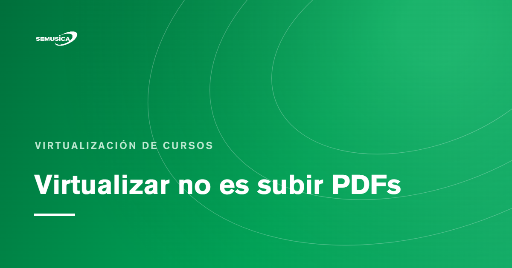

Blog › Virtualización de cursos
Virtualizar no es subir PDFs
Por Daniel Ravelo Franco — 5 jun 2026

Una de las ideas más frecuentes cuando una institución empieza a trabajar en e-learning es pensar que virtualizar un curso consiste, básicamente, en trasladar sus materiales a una plataforma: se reúnen los documentos, se suben los PDFs, se añade una evaluación final y, aparentemente, el curso ya está en línea.
En este artículo
- Del contenido al recorrido de aprendizaje
- La plataforma no reemplaza el diseño
- La importancia de la intención pedagógica
- El aprendizaje digital también necesita humanidad
- Qué significa virtualizar bien
- De repositorio a ecosistema formativo
- Una tecnología al servicio del aprendizaje